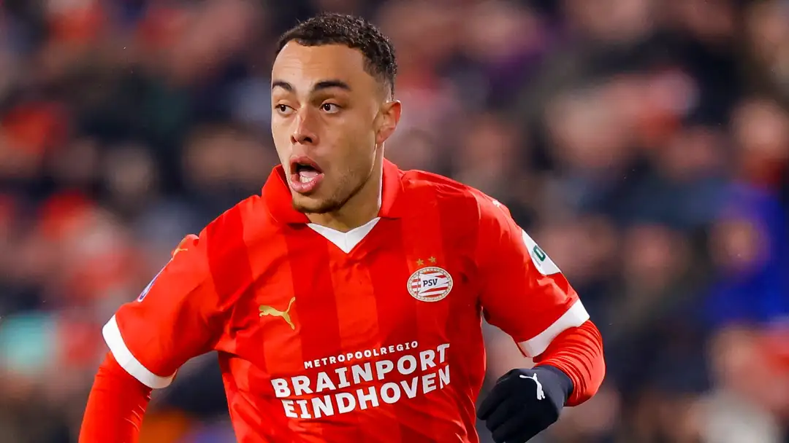

PSV trying to sign Sergino Dest on the cheap! Eredivisie giants hope to talk Barcelona down from shockingly cheap transfer clause to keep USMNT star
American defender Sergino Dest, who has played a crucial role for PSV this season, is being looked at on a permanent transfer by the Dutch club.
The former Spain national team coach dropped Mbappe from the Parisians' starting lineup during their underwhelming 2-2 draw at home to Reims. The World Cup winner was brought on in the 73rd minute of the game but failed to make an impact on proceedings.
According to Mundo Deportivo, PSV want to keep Dest in Eindhoven past his loan this season, however, they're set to approach Barcelona with an offer of their own - instead of triggering his release clause. The Dutch giants are incredibly happy with the versatile fullback, who has excelled in all competitions, with one goal and six assists across the board.
PSV's approach would entail them making a bid for Dest under the value of his current release clause of €10m (£9m/$11m). The Catalan club could be enticed by a bid simply to get him off their books, especially considering that he is now on his second loan away from the first-team since arriving from Ajax in 2020-21.